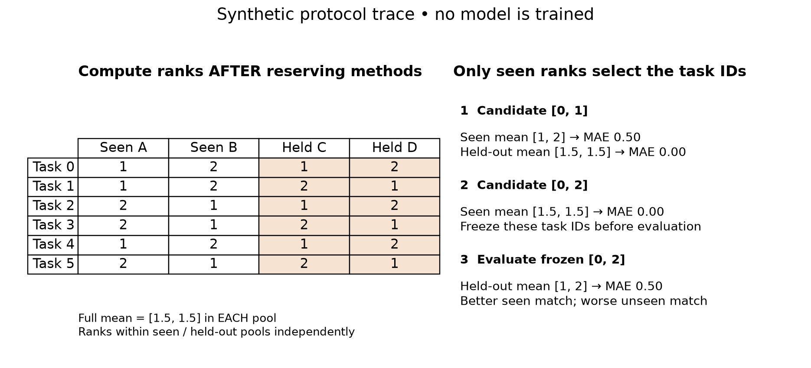

Benchmark evidence card
Evidence source → declared complete panel → metric direction → within-pool ranks → dataset aggregation → paired sensitivity → frozen decision → held-out-method evaluation.

Operational reference¶
- Preserve source revision, raw-file hashes, raw row labels and explicit model aliases. A hash verifies bytes, not the underlying dataset protocol.
- Parse means and SDs separately. Reject malformed nonmissing cells; never replace missing results with zero.
- Orient accuracy upward / RMSE downward, then assign average-tie ranks within the declared pool. Mean ranks give each retained dataset one vote.
- Bootstrap paired rank gaps across whole datasets. The interval is percentile-based, conditional on published means; no raw-seed covariance is available.
- Reserve method columns BEFORE ranking. Minimize mean-rank MAE over seen methods; evaluate frozen selected IDs using an independently ranked unseen pool.
- Compare random and selected subsets within the same pool; pool sizes set rank scales. Method rotations and repeated search seeds are overlapping sensitivity cases.
Six-model panel: 300 tasks, 120/80/100 by type. Paper-like tiny panel: 276 complete tasks, 116/60/100; select17/9/15, totaling41. Original TALENT tiny benchmark:45; exact Table7 not regenerated. Neither observed rank nor survey taxonomy establishes a universal model family winner.
Source reading route¶
Borisov v3 §§III–IV and VII–VIII for taxonomy and its own five-task experiment; TALENT v3 §§4–5 and8 for protocol and two distinct tiny benchmarks; 2024 survey §§2–3 for a further map, followed by the primary papers it cites.
Meta-benchmark reading card¶
| Evidence object | Can support | Cannot recover by itself |
|---|---|---|
| Taxonomy | Mechanism and assumption comparisons | New controlled performance measurements |
| Published mean ± SD | Marginal reported summaries | Paired seed covariance |
| Complete score matrix | Within-task ranks and task resampling | Unreported search or failure histories |
| Outcome-selected subset | Behavior conditional on that selection | Independent broad superiority |
Preserve missing values and task identities. Rank after checking metric direction. Resample dataset rows jointly across models. Var(A−B) requires covariance; marginal SDs alone are insufficient.